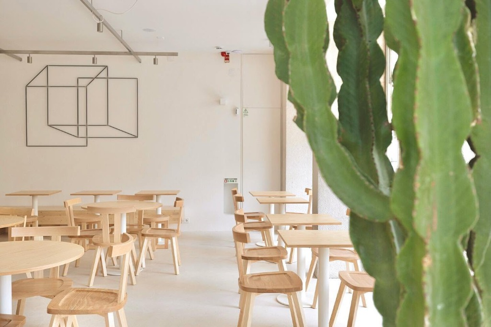
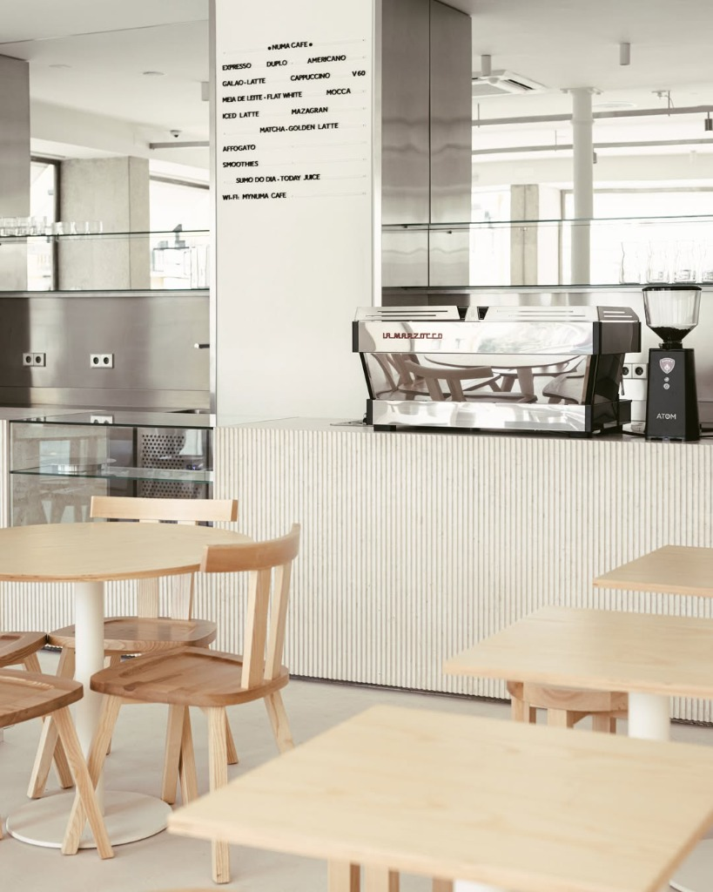

A Space in Lisbon
Designed as an unhurried pause in the rhythm of the city. A blend of minimalist aesthetics, natural light, and specialty coffee craft.
Between Príncipe Real and Bairro Alto, where Lisbon pauses.
AMUN CAFÉ was created with a simple intention: to provide a luminous, welcoming space where specialty coffee is treated with reverence, and wholesome seasonal food is served without pretension.
Our interior embraces light blonde woods, clean geometric lines, and natural botanical elements, inviting both locals and travelers to stay a while.


Quality Without Compromise
Every cup is brewed with precision. From single-origin espresso shots extracted on our La Marzocco machine to meticulously poured V60 filter coffees and vibrant plant-based lattes.
Our kitchen operates with the same philosophy: fresh seasonal produce, crusty Portuguese sourdough, and colorful ingredients that nourish body and soul.
Explore Our Offerings →